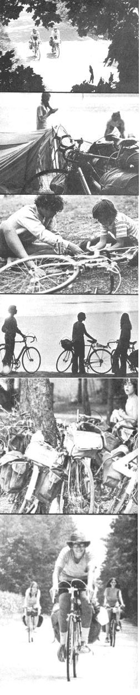
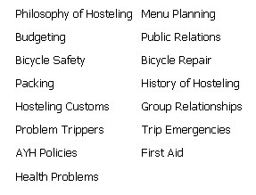
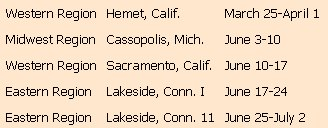

If you enjoy outdoor life, cycling, all-expense-paid vacations and the company of young people . . . you should know about a program originated by American Youth Hostels, Inc. Each year, AYH pays dozens of men and women to lead small groups of teenagers on one to two-month bicycle excursions in 40 countries. This coming summer the organization plans to double the number of these trips in the United States and Canada, which means that qualified leaders are in short supply. This could be your big chance!
. . . but first, as they say, a word about the sponsor:
WHAT IS AYH?
American Youth Hostels, Inc. is a non-profit, service organization that was established in 1934. The association maintains a system of simple, low-cost overnight accommodations for young people (generally 15 to 35, although older "youngsters" are always welcome) who prefer to travel alone or in small groups on inexpensive public transportation, by sharing rides or-and especially-by hiking, cycling, canoeing, skiing, sailing, riding horses or otherwise "using their own steam".
AYH is a member of the International Youth Hostel Federation and membership in AYH entitles an individual to admission to any hostel in the 46 other nations in which IYHF affiliates are located. Young adults who join AYH, then, can travel throughout large sections of the civilized world on a people-to-people basis at rock-bottom expense.
Yearly dues for AYH members under 21 are only $5.00 and AYHers over 21 pay an annual membership fee of just $10.00. Hostelers are required to carry along their own personal eating, sleeping and washing gear and pay overnight charges of only $1.00-$2.00 for the use of bed, mattress, blankets and cookinq facilities at each stop.
WHAT IS AN AYH "TRIP"?
Although hostelers may travel alone, with one or more friends or with their families, many prefer to pay a set fee and join an AYH sponsored tour lasting four to eight weeks. These excursions are carefully mapped in advance on out-of-the-way and scenic routes and are led by qualified individuals who are responsible for the safety and well-being of the group.
Each member of the tour is expected to furnish his own bicycle, pack and personal gear and share cooking, cleaning and housekeeping chores along the way. The fee he pays ($240-$800 for a domestic trip, $615-$1050 foreign) entitles him to round-trip transportation with the group, all meals and accommodations, personal accident and sickness insurance, approved leadership and organization of the outing and such miscellaneous extras along the way-budget permitting-as visits to museums, concerts and theaters.
WHERE DO AYH OUTINGS GO?
Forty-two AYH groups traveled through parts of the United States and Canada last year and 33 expeditions were sent to Europe. There is also a special two-month tour of Japan. Separate domestic itineraries cover the Rockies, Hawaii, New England, the Pacific Northwest, the Great Lakes and other regions. Overseas swings are usually limited to the Scandinavian countries, northern and central Europe.
WHO MAY TAKE AN AYH TRIP?
In general, any AYH member who has been certified by his family doctor to be physically and mentally fit and who is at least 15 years old by July 1 of the summer of the excursion is eligible for a hosteling expedition in the U.S. or Canada. Minimum age for trips to most other parts of the world is 17 by July 1, although applicants only 16 years old are sometimes accepted for such excursions if they have certain previous AYH experience. All participants must enjoy the outdoors, get along with others and be willing and prepared to "put themselves" into the undertaking to make it a success.
WHO MAY LEAD AN AYH EXCURSION?
Leaders must be over 21, young in heart, members in good standing of AYH and their communities and in good physical health. Anyone who meets these qualifications will be considered although applicants are often graduate students, teachers and group workers looking for an interesting "job" during their long summer vacations. AYH plans its programs months in advance and wise aspirants apply early.
Every applicant is required to attend a one-week National Leadership Training Course conducted by experienced AYH leaders. The course costs $55, is informal, fun and covers the following subjects:
Leadership courses need not be taken the same year that a trip is led. I attended the training program in 1967 and led my first outing in 1969. My wife took the course in 1968 and didn't lead until 1971.
Married couples are eligible for leadership assignments together if both individuals have completed the training course. The assistant spouse then pays the regular price of the excursion less leadership and organization fees.
WHAT DOES A LEADER DO?
An AYH leader is not a travel guide. His primary responsibility is the well-being and safety of the group and he rides behind the others when cycling and watches for trouble. The leader also delegates responsibility for meal preparation and campsite and hostel clean-up (as well as doing his share!) and coordinates the flock's decision-making. He is further required to dispatch a weekly letter to AYH headquarters and keep a daily record of expenditures, roads traveled and overnight conditions.
AND WHAT IS HE PAID?
In return for his services, an AYH leader receives an all-expenses-paid vacation plus a modest amount of spending money. That is, he is given-free of charge-all the meals, accommodations, insurance and extra group activities (concerts, plays, etc.) enjoyed by the members of his flock plus a basic allowance based on the length of the excursion plus an extra allowance based on the total number of trips he has led in the past. In addition, the leader receives an allowance for the distance he must travel from home to the expedition's departure point and return.
IS IT WORTH IT?
I've now led two AYH tours. The first was a six-week swing through eastern Canada in 1969 and the second-co-led by my wife-a one-month cycling jaunt down the Atlantic seacoast last summer.
In both cases, most of my trippers were from middle or upper-middle class homes in the New York-New England area. All (there were nine youngsters in each troupe) were well-educated kids who quickly adapted to hosteling and enthusiastically accepted the hardships of bicycle touring.
On the Canadian excursion, we stayed overnight in youth hostels, YMCA's, a jail, a church, one motel and some camp facilities. We also spent nights in three youth hostels, a tourist home, a church and a motel on the East Coast trip . . . but, for the most part, camped out in the tents we carried along on that expedition.
On both outings, each tripper carried all his own equipment and belongings plus a share of the group's cooking utensils and food. We averaged about 40 miles a day and only used supplemental transportation (such as the AYH-arranged-for truck that carried us across the Chesapeake Bay Bridge-Tunnel) when necessary.
Neither trip was entirely free'n'easy. On the East Coast venture-for instance-we weathered two or three rainstorms, had a bicycle stolen in Atlantic City (the kids voted to buy a new one with group money), ate burned dinners, sometimes found ourselves stranded with a bent wheel and suffered other large and small mishaps that I had to find some way to turn into jokes.
For the most part, though, life as an AYH trip leader is great. The duties are slight when compared to the month or more free vacation, opportunity to see some country at a leisurely pace, special companionship of bicycle touring and general satisfaction that you receive in return.
All that and spending money, too! As an AYH tour leader, you just can't lose.
PACIFIC NORTHWEST-$495
6 Weeks
Clean fresh air awaits you in the Northwest . . . camp on a bed of pine needles in the shadow of Mt. Rainier . . . stand on the deck of a ferry winding through Puget Sound to San Juan Islands and Vancouver Island . . . see the famed gardens of Victoria, authentic totems and old English towns . . . swim on beaches laced with evergreens, or hop a logging train to visit a forest museum. Cycle around the Olympic Peninsula, stopping off to view the rain forest or dig clams . . . visit the logging and lumbering center of Aberdeen and cycle down the coast to the mouth of the Columbia River . . . stand where Lewis and Clark stood in 1805 . . . follow the river into Portland for the ride to the California wilds, culminating in a 6 day raft trip on the Klamath River. This is a rugged camping and cycling trip, starting in Seattle and ending in San Francisco. HIGHLIGHT: Raft Trip on Klamath River with experienced guides.
EUROPEAN EXPLORER-$880
London, Belgium, Germany, Austria,
Italy, Switzerland, Paris, Amsterdam
This trip has been especially planned to accommodate those who dig "FYOP" (Find your own place) itineraries. From London the group crosses to Belgium, visiting Ghent, Bruges, and Brussels. Castles on the Rhine carry you south to Heidelberg and then to Munich. Here the group is free to explore Bavarian Germany and Austria for two weeks, finding all of its own accommodations in out-of-the-way hostels until it resumes its scheduled reservations in Salzburg. The group covers Vienna, Venice and the major Italian cities, and then to the Swiss Alps, Lausanne, Geneva, Paris and Amsterdam. Sleeping bags and an adventurous spirit are a must.
For information on AYH trips here and abroad, the leadership program and hosteling in general, write:
AMERICAN YOUTH HOSTELS, INC.
Travel Dept.-National Headquarters
20 West 17th Street
New York, N. Y. 10011
1972
NATIONAL LEADERSHIP
TRAINING COURSES
(You must take one of these courses before you'll be allowed to lead an AYH trip.)
|
 |
 |
 |